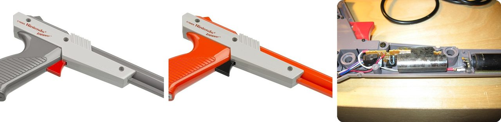
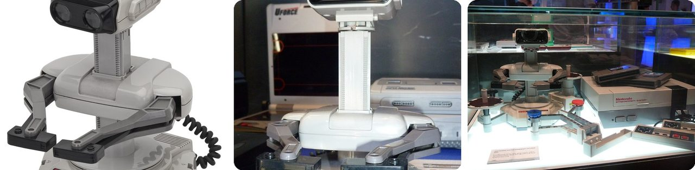
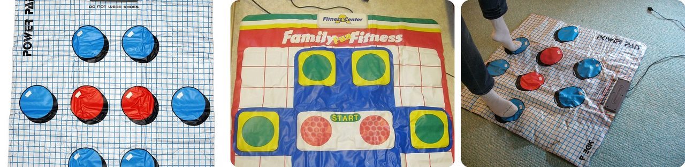
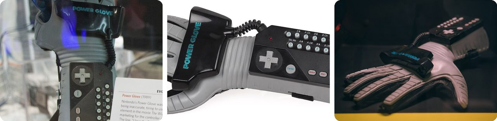
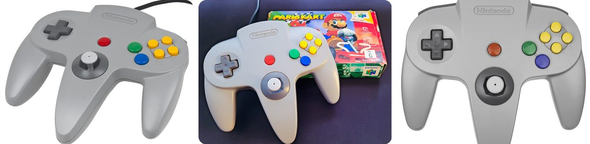
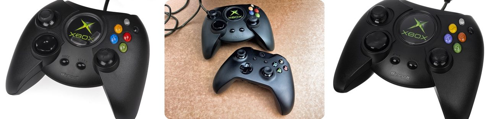
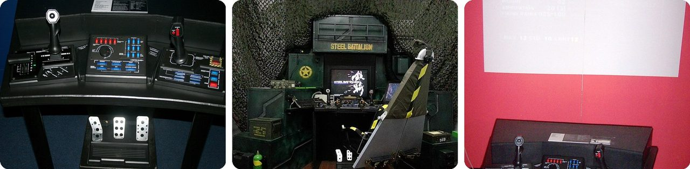
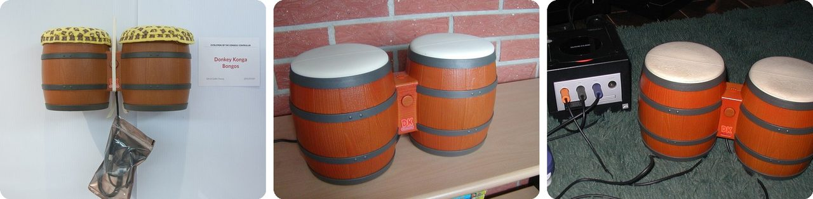
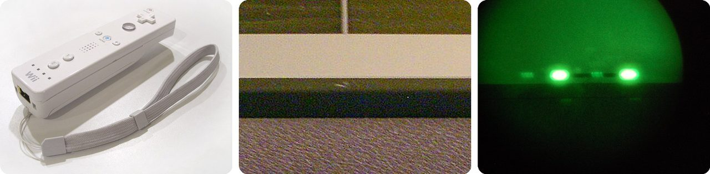
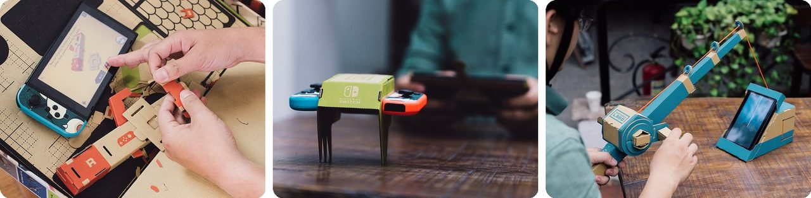

🌍 Top 10 Weird Video Game Controllers
Oct 11, 2026
1. 🔫 The NES Zapper finds targets by blacking out the screen

The Zapper light gun came with the Nintendo Entertainment System when it launched in the US on October 18, 1985, for games like Duck Hunt. It doesn't shoot anything. There's a light sensor in the barrel.
When you pull the trigger, the game turns the whole screen black for one frame, a sixtieth of a second. On the next frame it draws every target as a plain white box. If the sensor sees white, you hit something. With several targets, each one flashes on its own frame, one after another, so the game knows which you aimed at.
The first Zapper was dark gray. A new US toy gun law said toy guns had to look different from real ones, so in 1989 Nintendo switched it to bright orange.
Think of it as a game of "everybody freeze, lights on, who's pointing at the lamp?"
2. 🤖 R.O.B. the robot was a disguise to sell the NES

After the US video game crash of 1983, many stores didn't want to sell game consoles anymore. So when Nintendo launched the NES in New York in October 1985, it pitched it as a fancy toy, and the star was R.O.B., the Robotic Operating Buddy.
R.O.B. had no wires to the console. Games sent it commands by flashing the TV screen, and its eyes picked up the flashes, just like a Zapper. It could do six different moves, like turning and grabbing.
Only two games ever used it, and it was painfully slow. A Nintendo marketing boss said demoing it was "like watching grass grow." Nintendo quietly dropped it a few years later, but by then the NES had made it into stores.
Basically, the robot was the gift wrap around the video game.
3. 🇯🇵 The Power Pad turned your living room floor into a controller

The Power Pad started in Japan in 1986 as Bandai's "Family Trainer." It's a big gray plastic mat with 12 pressure sensors hidden between two layers, laid out as big circles you stomp on.
Nintendo bought the rights for North America and released it in 1988 with a track-and-field game. You ran in place on the mat to make your runner go. About 500,000 were sold in North America.
Dance games like Dance Dance Revolution trace their dance pads back to this mat.
In other words, the floor was the controller and your legs were the thumbs.
4. 🇺🇸 The Power Glove couldn't feel your little finger

The Power Glove came out in 1989 for the NES, made by toy company Mattel, and its look was based on RoboCop. It had a regular NES keypad on the forearm, plus sensors to follow your hand.
The finger sensors were strips coated with ink that conducts electricity, and each finger could only report four positions. The pinky wasn't measured at all, to save money, since it usually moves along with your ring finger anyway.
Only two games were made to use it, and players found it hard to control. It's remembered more for its hype than for how well it worked.
It was a glove that only half listened to your hand.
5. 🇯🇵 The N64 thumbstick is secretly a tiny computer mouse

The Nintendo 64 controller from 1996 has a strange three-handled "M" shape, and it was one of the first to put a stick under your thumb. Inside, that stick works like an old ball mouse: moving it spins a slotted wheel that keeps breaking a beam of light, and the console counts the blinks.
Because it only counts movement, the console assumes the stick is centered when you switch it on. If it isn't, the stick reads wrong until you recalibrate it.
And it hurt some players. Spinning the stick fast with your palm in 1998's Mario Party gave people blisters. After a settlement with New York's attorney general, Nintendo offered free protective gloves.
Think of it as an old computer mouse flipped upside down under your thumb.
6. 🇺🇸 The original Xbox controller set a record for being huge

The first Xbox controller, from 2001, was nearly three times the size of Sony's PlayStation controller. Microsoft's parts supplier refused to make the compact folded circuit board Sony used, so the controller had to be built around a bulky one.
It was nicknamed "the Duke," after the son of a project manager. When it was unveiled, some audience members threw things at the designer on stage, and Guinness later listed it as the biggest game controller.
Japan never got it; a smaller version was made for Japan and soon replaced the Duke everywhere. But fans missed it, and in 2018 it came back for the Xbox One, now with a little screen that plays the old Xbox startup animation.
It's the clown shoes of game controllers, and people still love it.
7. 🇯🇵 Steel Battalion came with a 44-control cockpit and three pedals

Steel Battalion, a 2002 Xbox game by Capcom, puts you inside a giant walking tank, and it only works with its own controller. That controller has 44 inputs: two joysticks, a throttle, a radio dial, switches, three foot pedals and an eject button.
You have to start your machine with a sequence of switches before every mission. If mud splatters your view, there's a button for the window wipers. Turn too fast and you tip over.
And here's the brutal part. If the game tells you to eject and you don't, your pilot dies and the game deletes your save file, so you start over from scratch.
Basically, it's a fighter-jet cockpit you plug into your TV.
8. 🇯🇵 Someone beat a famously hard game using bongo drums

The DK Bongos are a pair of little barrel drums made for the GameCube's Donkey Konga music games. You slap the left drum, the right drum or both, and a sound sensor between them picks up your clapping too.
They were built for drumming along to songs, but the same few inputs can stand in for a regular controller.
That's how, in 2020, a player beat Sekiro: Shadows Die Twice, one of the hardest action games around, using nothing but the bongos. Later games, including a 2018 drumming game on the Switch, still work with them.
It's a toy drum set that doubled as a real gamepad.
9. 🇯🇵 The Wii "sensor bar" doesn't sense anything

The bar you set above or below the TV for a Wii has no sensor in it. It's just ten infrared lights, five at each end, which are invisible to your eyes. The camera is actually in the tip of the Wii Remote.
The remote sees the bar as two bright dots. How far apart the dots look tells the Wii how far away you are, and where they sit tells it where you're pointing. That's why two candles can stand in for the bar, and why candles or old light bulbs near the TV can confuse it.
The wrist strap had its own drama. Straps snapped during wild swings, so Nintendo swapped in thicker ones, going from 0.6 mm to 1.0 mm cord, for free.
In other words, the "sensor" bar is a pair of flashlights, and the remote is the one doing the looking.
10. 🇯🇵 Nintendo Labo turned cardboard into working controllers

Nintendo Labo, launched in April 2018, came as sheets of punch-out cardboard. You folded them into "Toy-Cons" like a piano, a fishing rod, a motorbike handlebar or a wearable robot suit, then slotted in the Switch's little Joy-Con controllers.
The piano is the clever one. The Joy-Con's infrared camera sits inside and watches the cardboard keys, so it can tell which one you pressed. The cardboard RC car has no motor; the Joy-Con's vibration shakes it forward.
If a piece tore, you could buy replacements or download free templates and cut out new ones yourself.
It's a cereal box that turned into a piano.
Fun fact
The 1983 video game crash that made Nintendo hide the NES behind a robot was so bad that Atari dumped truckloads of unsold game cartridges into a landfill in Alamogordo, New Mexico. For decades it was treated as an urban legend. In 2014 a film crew dug it up and found the cartridges, including copies of the infamous E.T. game. Plenty of other treasures have been buried and later dug back up: next time, the strangest things ever found buried in the ground.
Photo credits (Wikimedia Commons)
- #1: Nintendo-Entertainment-System-NES-Zapper-Gray-R.jpg by Evan-Amos, Public domain
- #1: Nintendo-Entertainment-System-NES-Zapper-Orange-R.jpg by Evan-Amos, Public domain
- #1: Modded NES Zapper Interior (flickr) by scanlime, CC BY-SA 2.0
- #2: NES-ROB.jpg by Evan-Amos, CC BY-SA 3.0
- #2: R.O.B. (8560768398).jpg by Chapuisat from España, CC BY 2.0
- #2: R.O.B. and a bunch of other NES gear at Nintendo World (flickr) by MattGrommes, CC BY-SA 2.0
- #3: NES-power-pad.jpg by Evan-Amos, Public domain
- #3: NES Family Fun Fitness.JPG by Ville Siliämaa, CC BY-SA 3.0
- #3: Power Pad Side A demo.jpg by Joshua Wickerham (kafka4prez) from The Americas, China, CC BY-SA 2.0
- #4: Nintendo Power Glove (7973425758).jpg by Digital Game Museum, CC BY 2.0
- #4: NES-Power-Glove.jpg by Evan-Amos, Public domain
- #4: Power Glove on display at the Video Game Museum, Berlin.jpg by Marcin Wichary, CC BY 2.0
- #5: N64-Controller-Gray.jpg by Evan-Amos, Public domain
- #5: Nintendo 64 Controller with Mario Kart 01 (flickr) by SUPERNUDIST, CC0
- #5: Nintendo-64-Controller-Gray-Flat.jpg by Evan-Amos, Public domain
- #6: Xbox-Duke-Controller.jpg by Evan-Amos, CC0
- #6: The first and the latest... (flickr) by Diego3336, CC BY 2.0
- #6: Xbox-Controller-Duke-FL.jpg by Evan-Amos, Public domain
- #7: Steel Battalion controllers.jpg by John Tregoning (Flickr profile), CC BY 2.0
- #7: VIGAMUS Steel Battalion.jpg by Barbiere1138, CC BY-SA 3.0
- #7: Steel Battalion (flickr) by georgehotelling, CC BY-SA 2.0
- #8: Donkey Kong bongos.jpg by Digital Game Museum, CC BY 2.0
- #8: DK-Bongos.JPG by de:Benutzer:Waluigi, CC BY-SA 3.0
- #8: Donkey Konga Gamecube bongos.jpg by Erick Sasse, CC BY-SA 2.0
- #9: Wii Remote Image.jpg by Greyson Orlando, Public domain
- #9: Nintendo Wii Sensor Bar.jpg by Jeremy Mikesell, CC BY-SA 3.0
- #9: Wii sensor bar seen through AN/PVS-14 (flickr) by AngryParsley, CC BY-SA 2.0
- #10: Nintendo Labo construction.jpeg by Tinh tế Photo, CC0
- #10: Nintendo labo rc car.jpeg by Tinh tế Photo, CC0
- #10: Nintendo Labo fishing rod.jpeg by Tinh tế Photo, CC0


.jpg){kind=link}


.jpg){kind=link}